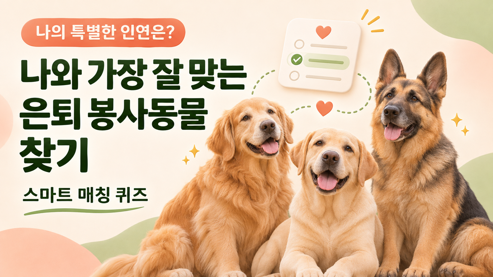

🐕🦺
국가를 위해 헌신한 영웅들의 안락한 노후를 함께해주세요
폭발물탐지견, 은퇴 훈련견 등 멋진 활약을 펼친 봉사동물들이 따뜻한 품을 기다리고 있습니다.
간단한 취향 및 환경 조사를 통해 나와 가장 교감이 잘 될 친구를 추천해 드릴게요!

폭발물탐지견, 은퇴 훈련견 등 멋진 활약을 펼친 봉사동물들이 따뜻한 품을 기다리고 있습니다.
간단한 취향 및 환경 조사를 통해 나와 가장 교감이 잘 될 친구를 추천해 드릴게요!